User Testing - eApp form & FNA form
Background
In CUBE, the insurance agent app, agents sit with their customers and go through 2 long forms on the iPad: the FNA (Financial Needs Analysis), which finds out what the customer needs and which goals matter most, and the eApp (electronic application), which submits the policy application after the customer agrees to a proposal. Both forms are long, and agents fill them in while talking to the customer, so every extra second spent working out the form is felt by both of them.
Feedback from stakeholders pointed to 2 controls in these flows that needed a closer look:
eApp form - "Go to the field"
- A bottom bar shows how many mandatory fields are still incomplete, with a "Go to the field" shortcut
- 2 versions: without (V1) and with (V2) a highlight on the mandatory fields
FNA form - Goal prioritisation
- Agents rank the customer's saving goals (income protection, retirement, child's education ...)
- 2 versions: drag and drop the cards into numbered slots (V1) or tap the cards in order (V2)
Purpose
Evaluate how well the new "Go to the field" control in the eApp flow and the goal prioritisation interaction in the FNA work, find usability issues, and understand how they affect the overall journey.
Use the findings to decide which version to take forward and what to improve in the next design round.
Research Questions
- How do agents go through the application form with a customer today, and where do they get stuck?
- eApp form
- Is it clear which fields are mandatory?
- Do agents understand the bottom bar and use "Go to the field"?
- Does highlighting the mandatory fields (V2) help?
- FNA form
- Do agents know what to do when they land on the page?
- Drag and drop or tap - which feels more natural for prioritising the goals?
- Can they easily re-order the goals?
My Role
Designer (me) | Moderator | Observer & Note-taker
- Designing the 2 versions of each prototype and writing the questionnaire
- Briefing and guiding participants, observing, taking notes and synthesising the findings into the report
Process
Preparation
Testing Material
Clickable iPad prototypes, with 2 versions for each flow.
eApp form
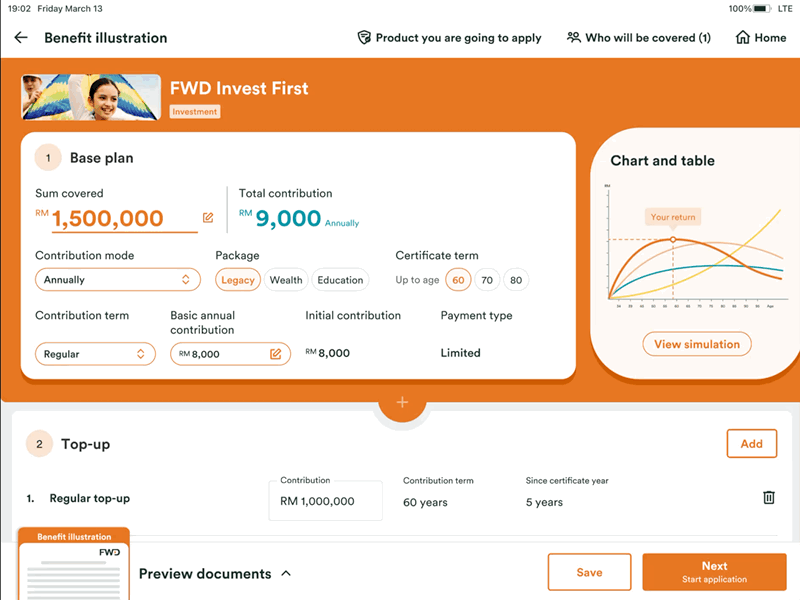
Version 1
Incomplete count and "Go to the field" in the bottom bar only
Version 2
Adds an orange highlight on the mandatory fields
FNA form - Goal prioritisation
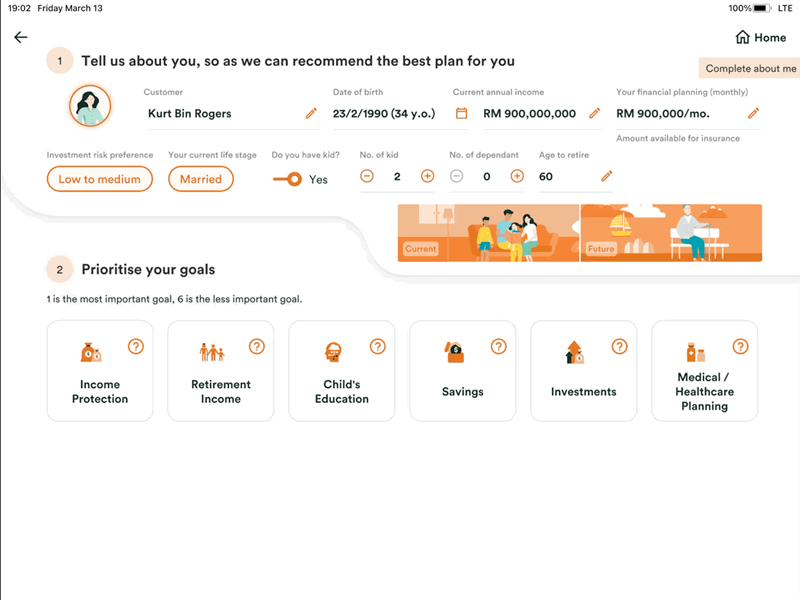
Version 1
Drag the goal cards into numbered slots
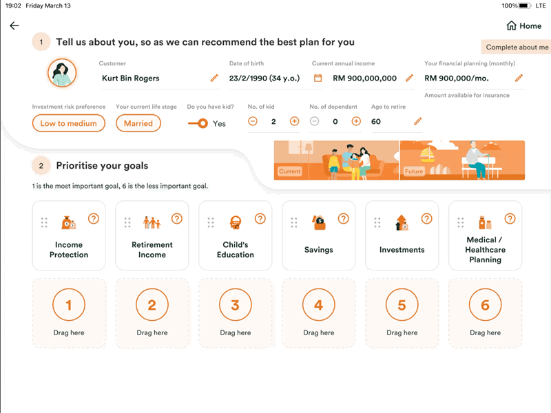
Version 2
Tap the cards one by one to rank them
Participants
3 insurance agents at different career stages, so we could see how experience changes the way they read the forms.
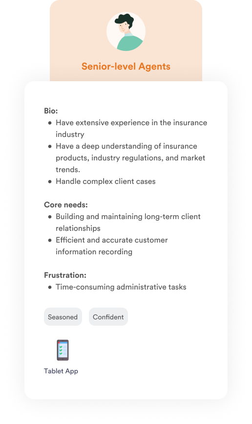
Agent A
8 years. Likes to try the extreme cases. Android user, uses an iPad for work.
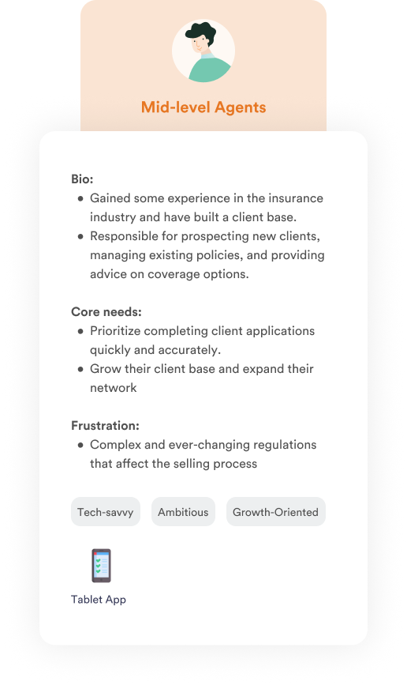
Agent B
2-3 years. Plays mobile games, very quick at tapping. iPhone user, uses an iPad for work.
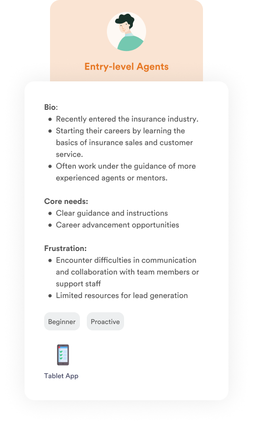
Agent C
Less than 1 year. Developer as her main job, cares about logic.
Testing Script
eApp form
Scenario: After confirming the proposal with the customer, tap "Next" to continue the application.
- When you land on this page, what is your first action? What catches your attention first?
- Is it clear what you need to do on this page?
- How would you interpret the bottom bar? What do you think of the hints?
- Would you tap it to go to the incomplete fields? Why / why not?
FNA form
Scenario: Select that the customer is a new lead, fill in the personal info, then arrange the FNA goals.
- Do you know what is happening on this page?
- How do you think you can prioritise the goals?
- How do you think you can re-order them?
General background questions
- "Can you walk me through the steps you take when filling in an application with a customer? Where are the main pain points?"
Run the Sessions
Flow & Logistics
Warm-up
- Consent and introduction
- How they do applications today
Do the task
- eApp form - V1 then V2
- FNA prioritisation - V1 then V2
Follow up questions
- Which version they prefer and why
- Probing on what they expected to see
Input Data
For each agent, I put together a profile card and a questionnaire board in FigJam, sorting what they said, what they did and what I observed under each question.
- Yellow - what the agent said
- Blue - what the agent did
- Green - what I observed
- Red - pain points
Agent Journeys & Feedback
Agent A - Senior, 8 years
eApp form
- Scrolled through the form first, then tapped the mandatory fields directly and finished with "Go to the field"
- Found the bottom bar understandable but not obvious - only tapped it after discovering what it does
- Missed that "Lead referred by" could be selected
"If using version 2 for highlighting the mandatory fields, I even don't need the bottom bar."
FNA form
- Didn't fill in the fields in order - started with "Investment risk preference"
- Didn't realise the gender icons were clickable, and missed the floating bar asking if this is an existing lead
- Tried to drag the cards but was confused at first. Once it clicked, he preferred dragging
「即係我拉落去果陣發覺唔對路呢，就拉過佢」
"If I drag it there and it feels wrong, I just drag it again."
Agent A - feedback & observation
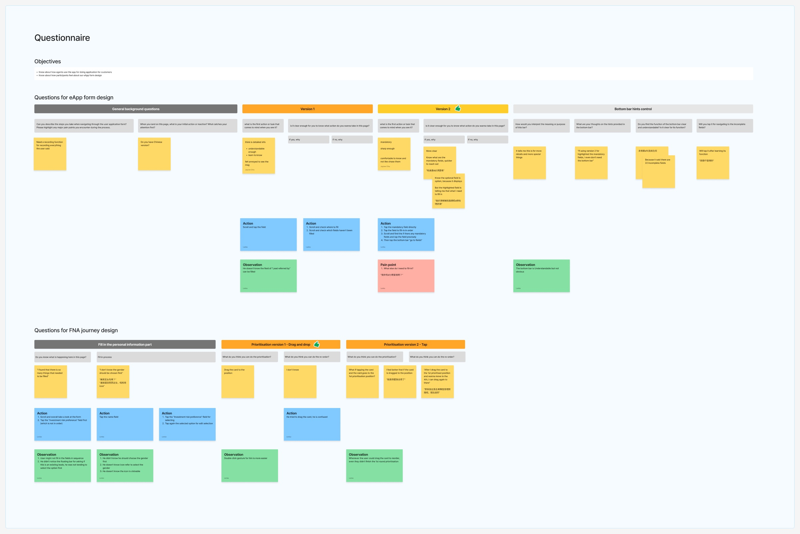
Agent B - Mid-level, 2-3 years
eApp form
- Started from the first field and filled everything in order
- Didn't notice which fields were mandatory, or any difference between V1 and V2
- Relied on the green check on each section title and the "Next" button appearing - didn't use "Go to the field" unless the prototype blocked him
「冇tick就即係未完成」
"No tick means it's not finished."
FNA form
- Understood drag and drop straight away from the numbered slots
- Tends to use tapping, and re-ordered by unticking and selecting again
「拉落去lor，我見到1234啊嘛」
"Just drag it down - I can see 1, 2, 3, 4."
Agent B - feedback & observation
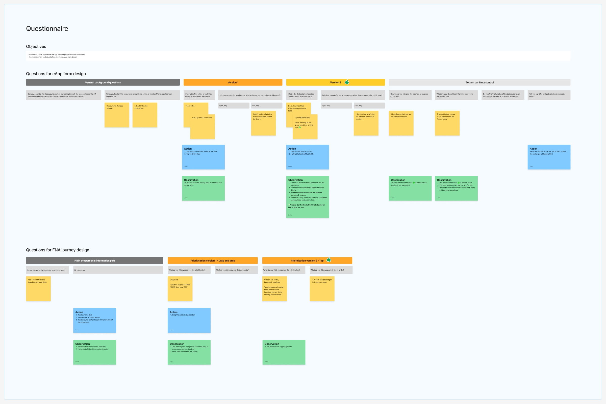
Agent C - Entry-level, < 1 year
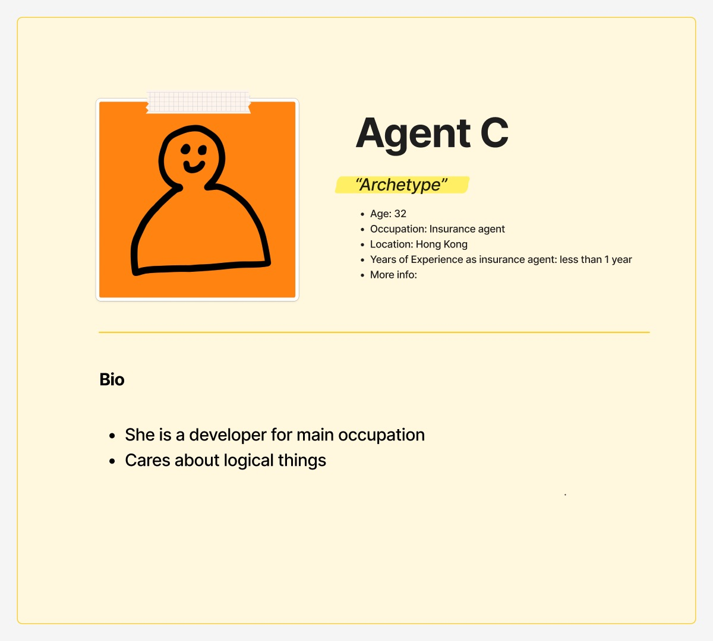
eApp form
- Filled in the form out of order, starting from the 3rd field
- Looked for "*" to tell which fields are mandatory
- Thought the filled "Identification number" field was still empty
- Learnt "Go to the field" on her own, and wanted V2 together with the bottom bar
"Much better at first glance, and faster."
FNA form
- Noticed the prioritisation section at first glance and dragged the cards without hesitation
- Thought the gender selector was just an icon, not a field
- Liked drag and drop, but worried first-time users wouldn't know how to use it
「我以為係icon黎wor」
"I thought it was just an icon."
Agent C - feedback & observation
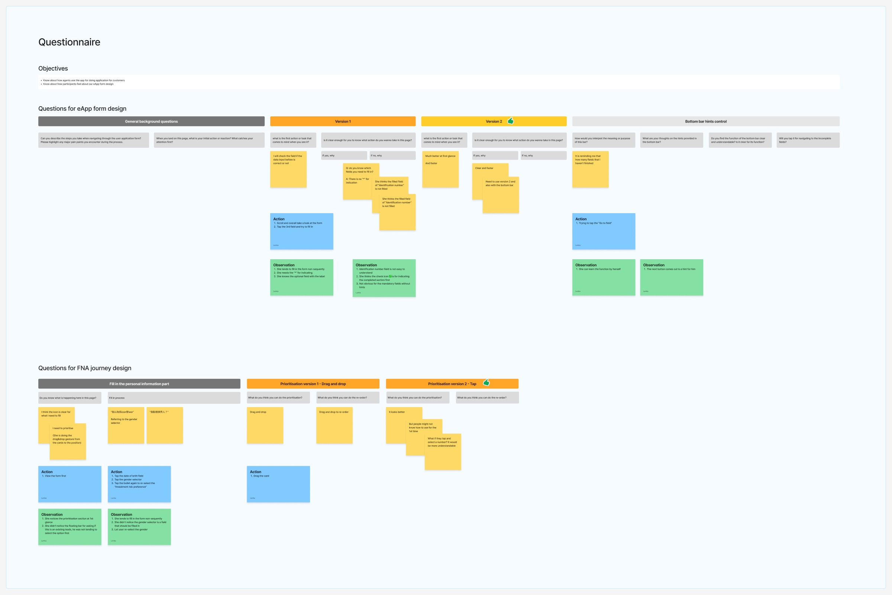
Beyond the prototype
The background questions also showed pain points that the UI alone can't solve:
Long, repetitive forms
Health-related products take much longer, some questions repeat, and one case needed 80-90 signatures.
Steps out of sync
If the customer changes the payment type at the end, the proposal and application don't sync and the agent has to start over.
New joiners lack guidance
Questions without context (e.g. family history, BMI) and hidden rules make it hard for less experienced agents to fill in the forms smoothly.
Analysis
I then grouped the feedback from all 3 agents by flow and by version, sorting it into pain points and gain points to compare V1 and V2 side by side.
1. eApp form
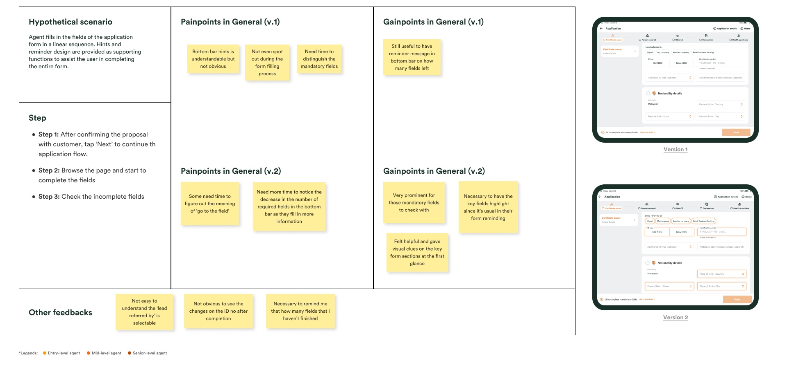
2. FNA goal prioritisation
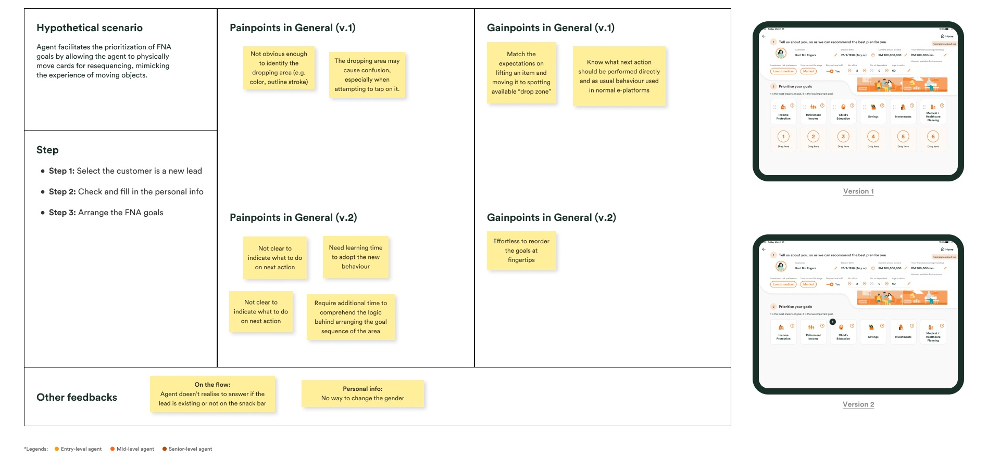
Insights
Agents don't fill in order
2 of 3 agents jumped around the form, so guidance can't rely on a linear flow - it has to show what's left wherever they are.
Hints in one place aren't enough
Each agent used a different cue - the highlight, the green check, the "Next" button. The bottom bar alone was easy to miss.
Direct manipulation wins, with hints
All 3 agents understood dragging the cards, but the drop area and how to re-order need clearer visual cues.
Design Decisions
1. eApp form - Version 2
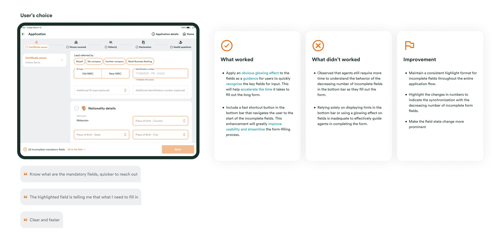
What worked
- Highlighting the mandatory fields helps agents spot what to fill in quickly
- The "Go to the field" shortcut brings them to the next incomplete field
Improvements
- Keep the same highlight for incomplete fields across the whole application
- Animate the count in the bottom bar so agents notice it going down
- Make the change of field state more prominent
2. FNA goal prioritisation - Combined
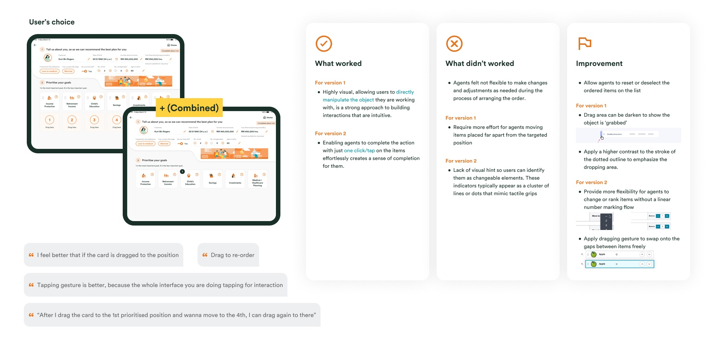
What worked
- V1: dragging the card itself is visual and intuitive
- V2: one tap per card gives a quick sense of completion
Improvements
- Combine both: tap to rank, drag to adjust
- Let agents reset or deselect ranked items
- Add grip handles, darken a grabbed card and raise the contrast of the drop area
What I Learned
- Make the prototype as complete as possible - unfinished parts pull participants out of the task
- As a moderator, avoid reacting to answers on the spot so participants aren't led
Outcome - Design Guideline
After the testing, I wrote the "Go to the field" control into the CUBE design guideline, so designers apply the same behaviour to every long form in the app, on both tablet and mobile.
Case 1 - WITH highlighted fields
Anchors the agent to the mandatory fields in a form.
When to use
- The form has some pre-filled fields (read mode or editable) mixed with mandatory fields
- Always together with the highlight on the mandatory fields
When not to use
- The form is blank
- The form only has mandatory / optional fields
Case 2 - WITHOUT highlighted fields
Shows how many fields still need to be filled in.
When to use
- The form is blank
- No highlight on the fields
When not to use
- The form mixes read mode and edit mode
Applied in tablet eApp
Tapping "Go to the field" highlights all the mandatory fields. The count goes down as each field is filled, and once all are cleared the control disappears and "Next" is enabled.
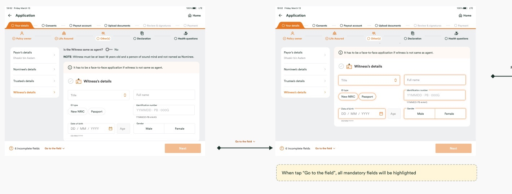
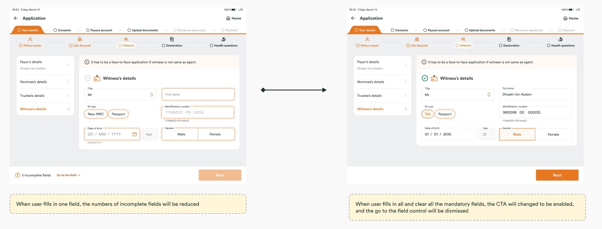
Applied in mobile eApp
On the smaller screen, the page auto-scrolls and anchors to the incomplete fields one by one, highlighting the next one each time.
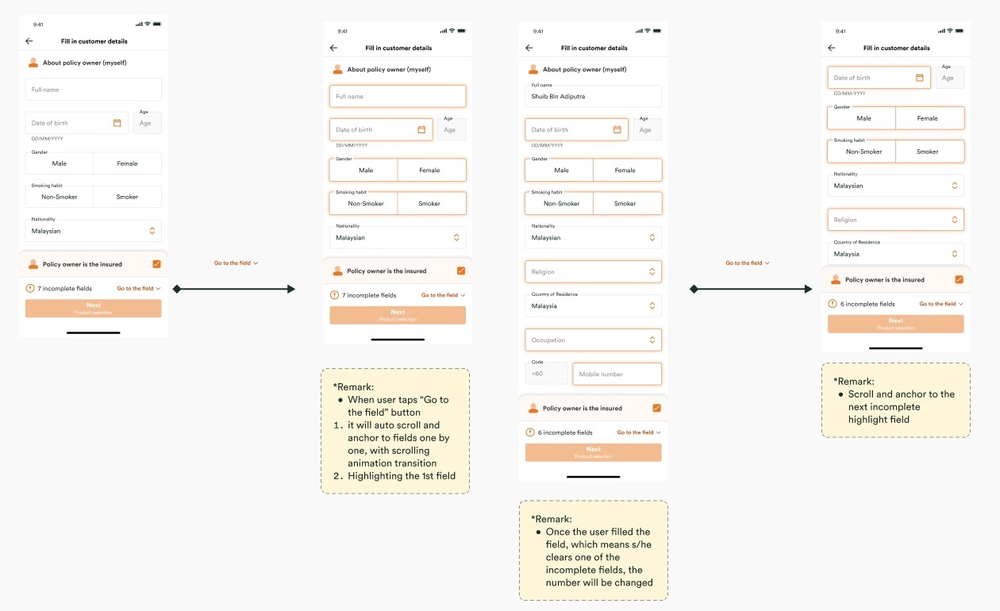
Jumping between panels
I also defined the edge cases when a form is split into collapsible panels: the count includes the newly opened panel, closing a panel keeps its fields counted, and "Go to the field" auto-expands the panel and anchors to the first blank mandatory field.
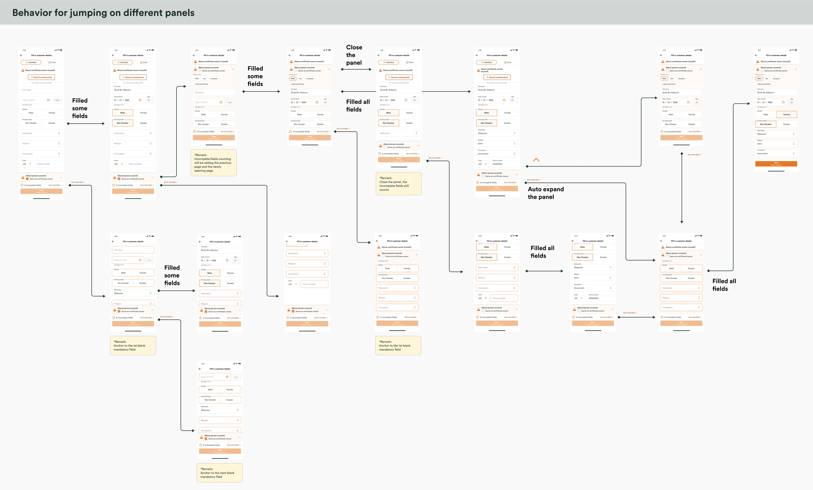